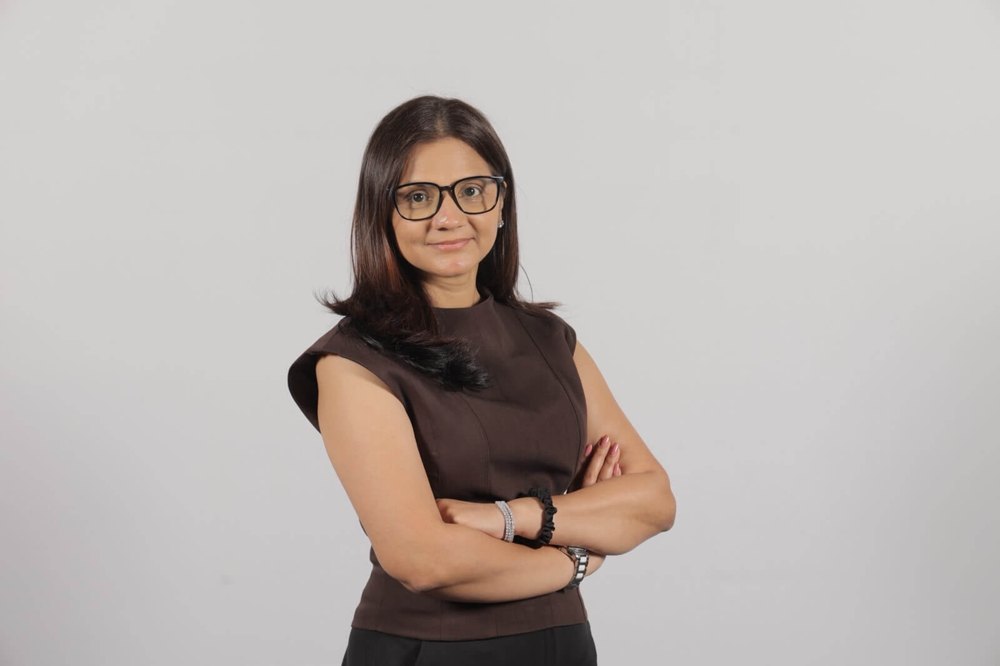
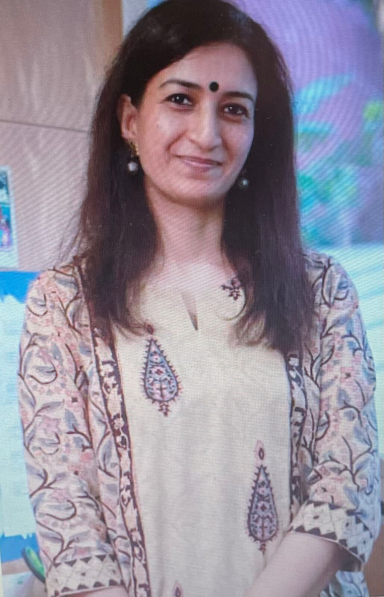

Messages from the Heads

Ms Shilpa Sharma
Principal
As I sit down to write this message...

Ms Natasha Contractor
Vice Principal & PYP Coordinator
Dear Grade 5 Learners...

Ms Pallavi Narain
Assistant PYP Coordinator
Dear Grade 5 Students, As you prepare to take your next exciting step into Grade 6....